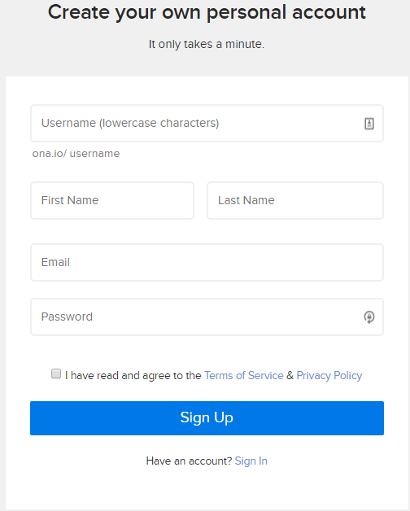
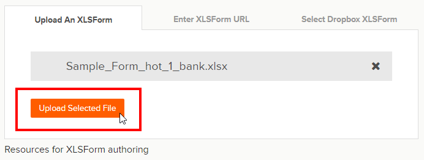
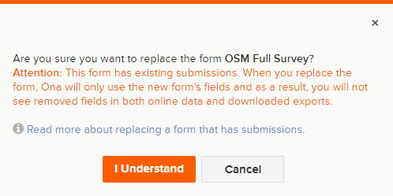

Meletakkan Formulir Survei ke Ona.io
Tujuan Pembelajaran:
- Mampu menjelaskan manfaat penggunaan Ona.io
- Menjelaskan cara mengunggah formulir survei ke server Ona.io
Setelah kita berhasil membuat formulir survei yang telah dipelajari pada modul Membuat Form Survey untuk Aplikasi ODK Collect & OpenMapKit, Anda akan mempelajari platform yang digunakan untuk mengunggah formulir survei ke salah satu platform. Platform yang digunakan pada materi ini adalah Ona.io. Ona.io merupakan salah satu platform yang dapat digunakan untuk meletakkan formulir survei yang akan digunakan untuk kegiatan survei lapangan menggunakan ODK Collect atau OpenMapKit. Disini Anda akan mempelajari apa saja yang bisa dilakukan menggunakan Ona.io dan bagaimana cara mengunggah formulir survei kedalam Ona.io.
I. Pengenalan Ona.io
a. Apa itu Ona.io
Ona.io adalah suatu perusahaan sosial yang membangun data infrastruktur untuk keperluan pengumpulan data di lapangan. Mereka menyediakan beberapa platform yang dapat digunakan untuk membantu pengumpulan data, salah satunya adalah platform penyimpanan data lapangan. Anda dapat mengunggah formulir survei Anda ke server yang disediakan oleh Ona.io dan kemudian Anda gunakan untuk kegiatan lapangan Anda. Platform Ona.io menyediakan beberapa kemampuan yang akan membantu kegiatan pengumpulan data. Salah satunya adalah:
- Statistik jumlah data yang masuk dalam bentuk grafik maupun tabel
- Peta lokasi sebaran data hasil pengumpulan di lapangan
- Tampilan foto yang berhasil dikumpulkan selama pengumpulan data
- Kemampuan mengunduh data dalam beberapa jenis file seperti csv, xls, kml, osm atau json
b. Batasan dalam Ona.io
Apabila Anda ingin menggunakan platform Ona.io Anda dapat membuat akun secara gratis dan kemudian menggunakan platform tersebut untuk mengunggah formulir survei. Namun terdapat beberapa batasan dalam menggunakan akun gratis di Ona.io:
- Hanya dapat membuat satu proyek pribadi
- Untuk proyek pribadi hanya dapat menampung 500 data masuk
- Dalam satu proyek pribadi dapat menampung sebanyak 10 jenis formulir survei
II. Manajemen Formulir Survei pada Ona.io
Setelah Anda mengetahui apa itu platform Ona.io dan batasannya, pada modul ini sekarang Anda akan mencoba untuk memasukkan formulir survei yang sudah Anda buat sebelumnya pada modul Membuat Formulir Survei untuk Aplikasi ODK Collect dan OpenMapKit. Apabila Anda belum membuat formulir survei, Anda bisa mengunduh contoh formulir survey dengan mengakses link: http://bit.ly/sample_form_survey.
a. Membuat akun di Ona.io
Sebelum Anda meng-upload formulir survei Anda, Anda harus memiliki akun di Ona.io terlebih dahulu. Untuk membuat akun di Ona.io klik pada tombol Get Free Account dan kemudian masukkan nama Anda (huruf kecil) yang akan menjadi url tempat Anda menyimpan formulir dan nantinya akan digunakan di dalam aplikasi ODK Collect.

b. Meng-upload Formulir Survei
Saat pertama kali Anda berhasil membuat akun pada Ona.io, Anda akan secara otomatis membuat proyek pribadi dengan nama Anda sendiri.

Untuk meng-upload formulir Anda, klik pada nama proyek Anda sendiri. Setelah berhasil masuk ke dalam proyek Anda. Klik pada bagian Add a form dan sebuah jendela baru akan muncul. Disini Anda diminta untuk memasukkan file XLSForm. Pilih file formulir survei Anda. Setelah Anda berhasil memilih file formulir survei Anda, klik pada bagian Upload Selected File. Sistem akan mengecek apakah formulir Anda terdapat kesalahan dalam pembuatan ataupun tidak.

Jika sudah berhasil mengunggah formulir survei, akan muncul keterangan Form Verified! Dan klik pada tombol Save form untuk langsung menyimpan formulir surveinya.

c. Mengganti formulir survei
Apabila Anda melakukan perubahan di dalam formulir survei yang telah berhasil diunggah ke dalam proyek Anda, Anda bisa memperbarui formulir survei tersebut. Namun yang perlu diingat adalah ketika Anda memperbarui formulir survei Anda, apabila formulir tersebut sudah diisi oleh beberapa data, maka ada potensi data yang sudah dimasukkan akan terhapus. Oleh karena itu, sebelum Anda mengganti formulir survei, disarankan untuk mengunduh data Anda terlebih dahulu untuk berjaga-jaga apabila terjadi kesalahan.
Untuk mengganti formulir survei Anda, klik pada tanda panah kebawah yang terletak di bagian paling kanan dari formulir survei Anda. Kemudian pilih Replace Form.

Apabila formulir survei Anda telah berisikan beberapa isian. Akan muncul peringatan dari Ona.io. Peringatan tersebut muncul agar pengguna paham bahwa ketika mengganti formulir survei, terutama mengganti variabel, Ona.io akan menggunakan variabel yang terdapat pada formulir survei yang baru.

Setelah Anda mengklik tombol I Understand, Anda akan diarahkan ke jendela untuk mengunggah formulir survei. Pilih formulir survei baru Anda dan klik Upload Selected file. Setelah formulir berhasil tervalidasi, klik pada bagian tombol Save form.
d. Menghapus/Menonaktifkan Formulir Survei
Apabila Anda memiliki formulir survei yang ingin Anda hapus/dinon-aktifkan. Anda bisa melakukannya dengan cara memilih tanda panah ↓ yang terletak pada bagian sebelah kanan formulir survei Anda dan kemudian pilih Delete Form untuk menghapus atau Make inactive untuk menonaktifkan formulir Anda.
Catatan: Apabila Anda memilih untuk Delete Form. Anda akan diminta untuk menulis ulang kembali nama formulir survei Anda sebelum Anda bisa menghapus formulir survei Anda. Dengan memilih Make inactive, maka formulir survei Anda tidak akan nampak pada aplikasi ODK Collect pada saat tahapan mengambil formulir survei kosong.
e. Men-download XLSForm
Anda bisa men-download format XLSForm dari formulir survei yang telah Anda buat dengan mengklik tanda panah ↓ pada bagian kanan dari formulir survei Anda dan kemudian pilih Download XLSForm.
f. Men-download Data Hasil Survei
Untuk men-download data hasil survei. Anda terlebih dahulu harus memilih formulir survei Anda. Setelah Anda berhasil memilih formulir survei, Anda akan diarahkan pada halaman manajemen formulir survei.

Klik pada bagian tombol Prepare Data Export untuk memulai mengunduh data formulir survei Anda. Setelah itu Anda akan diarahkan untuk memilih tipe file yang akan Anda unduh.

Apabila formulir survei Anda tidak menggunakan foto, Anda bisa memilih langsung tipe file CSV. Namun jika formulir survei Anda menggunakan foto, Anda bisa memilih Zip folder of media attachment. Lama tidaknya proses download data survei tergantung dari berapa banyak data yang Anda hasilkan pada kegiatan pengumpulan data.
Data hasil survei dari Ona.io ini nantinya dapat Anda gunakan untuk berbagai macam keperluan pemetaan seperti misalnya data dengan format KML dapat Anda buka dengan aplikasi Google Earth, data dengan format OSM dapat Anda buka dengan aplikasi JOSM, dan data dalam format CSV dapat Anda buka dengan aplikasi Spreadsheet atau QGIS.
RINGKASAN
Selamat! Saat ini Anda telah memahami bagaimana mengunggah file formulir survei ke dalam salah satu platform yang bisa digunakan untuk menyimpan formulir survei secara online. Ada beberapa pilihan yang dapat Anda gunakan selain Ona.io untuk meng-upload formulir survei. Ona.io dapat menjadi salah satu pilihan karena penggunaannya yang sangat mudah dan gratis berdasarkan syarat yang telah dijelaskan sebelumnya.